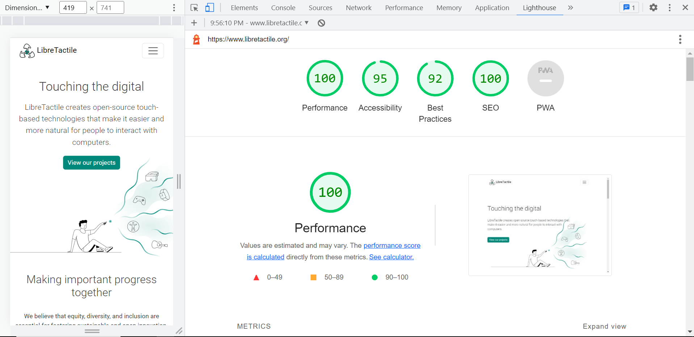

LibreTactile.org
A Website that Empowers a Non-Profit
I had the pleasure of working with a research and development non-profit organization. They approached me with a challenge - to design and develop a new website that would help them showcase their research projects and attract participants, collaborators, sponsors, and partners.
The process
I dove into the project headfirst, taking the time to understand the organization’s goals, values, and target audience.
I conducted market research and a competitive audit on similar websites to gain a deeper understanding of the industry landscape and determine what LibreTactile could incorporate into its brand to better reach their audience.
I then created a user flow to determine how the organization wanted users to navigate their website and find the information they needed. The website they had been using so far had many duplicate content and was confusing users while navigating and searching for information.
After that, I created wireframes and, along with the stakeholders, tweaked them to their needs.
After that, I proceeded to develop the sitemap and created a low-fi prototype that I tested with 30 people. This, to ensure that the website would be easy to use and that visitors could quickly find what they were looking for.
I worked iteratively to make sure the organization's feedback was incorporated at each stage of the development process, resulting in a website that truly reflected their values and goals.
Project under development: Please keep in mind that the user interface is subject to change as we continue to refine and enhance the design.

Result
Feel free to browse through the LibreTactile website here. You can also click here or scroll down to the end of the project to see the results of an audit conducted by Lighthouse in Chrome DevTools, evaluating performance, accessibility, best practices, and SEO of the website.
Responsive design for a seamless experience across devices
Here is a screenshot of the results of an audit conducted by Lighthouse in Chrome DevTools, evaluating performance, accessibility, best practices, and SEO.
